- ミラー本体、フロントカメラ、リアカメラ、各ケーブルを確認。
- 付属のリアカメラケーブルは約9m。車内の端に沿わせて余長を処理します。
- 内張りはがし、配線通し、テスター、絶縁用品、結束バンドがあると作業しやすくなります。
取付け車両：新型スペーシアギア このページは、新型スペーシアギアにユピテル NV-8000Mを実際に取り付けたときの手順をもとに作成しています。内装の外し方、配線の通し方、リアカメラまでの取り回しなどを写真付きで紹介します。車両の仕様やグレードによって細部が異なる場合があるため、作業前に現車を確認してください。
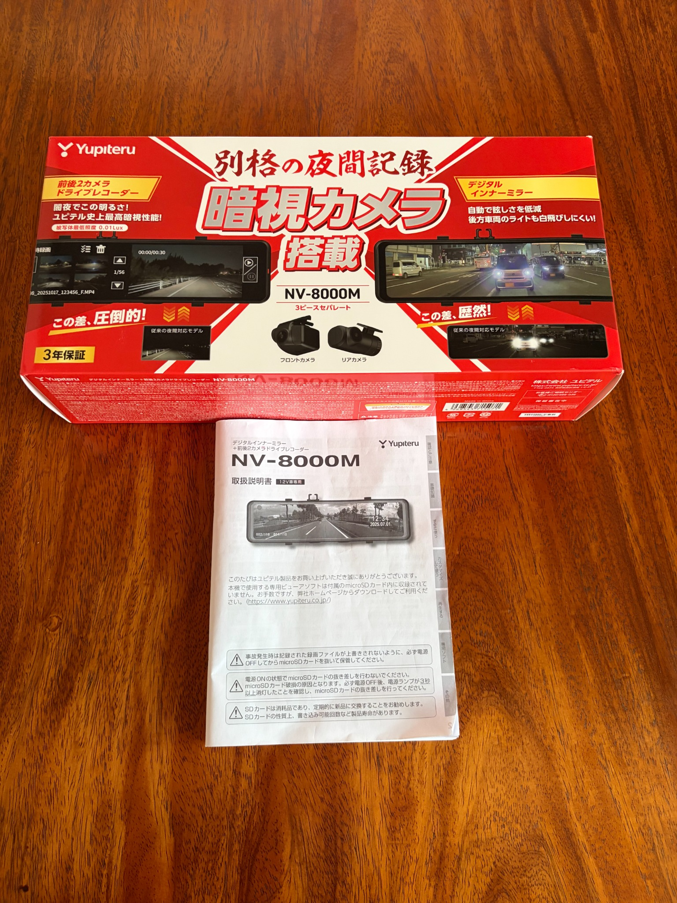
NV-8000Mについて
NV-8000Mは、デジタルインナーミラーと前後2カメラドライブレコーダーを組み合わせたユピテルのモデルです。公式仕様では、前後とも200万画素・F1.0、フルHD録画、HDR、GPS、Gセンサーを搭載し、最低被写体照度0.01Luxの暗視性能をうたっています。
10.11型タッチパネルハーフミラー
1080P1920×1080録画
0.01Lux最低被写体照度
32GB付属16〜128GB対応
約9mリアカメラケーブル
DC12Vマイナスアース車専用
HDRフロント／リア
3年保証消耗品を除く
仕様はユピテル公式製品ページ（2026年8月確認）を参考にしています。購入・取付け前は必ず最新の公式情報と取扱説明書を確認してください。
1. 取付け前の準備
あると便利：エーモン ターミナルセット E2
初心者の方は、エーモンのターミナルセット E2のような電工ペンチと端子類のセットを1つ持っておくと便利です。ギボシ端子・平型端子・丸型端子・クワ型端子などが入っており、今回のような電装品の取り付けや、今後の配線作業にも使えます。
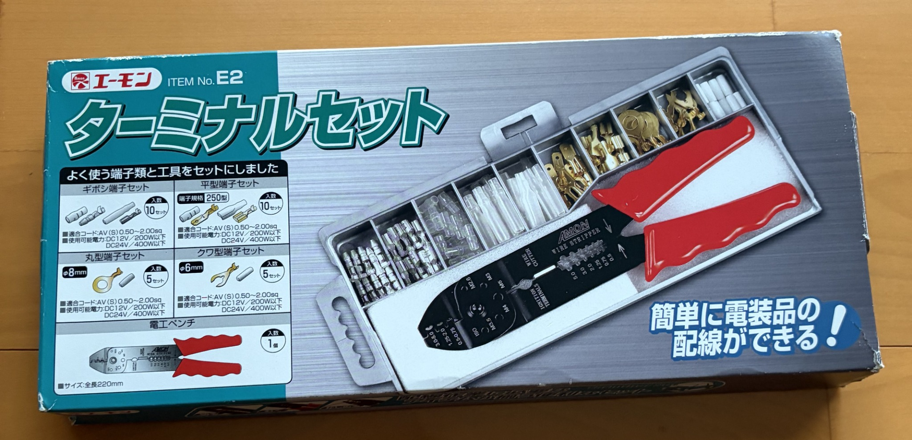
1
まず内容物と配線ルートを確認
いきなり内装を外すより、先に「前→Aピラー→天井→後ろ」のルートを決めると作業が楽です。
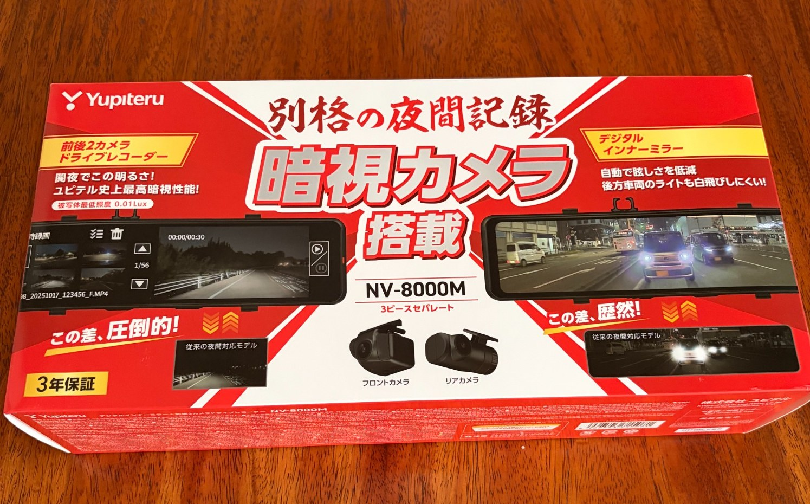
重要：このページは実車で行った一例です。車種・年式・グレードによりヒューズ位置、内装構造、エアバッグ位置は異なります。必ず車両側の取扱説明書・配線図を優先してください。
取付け前にそろえておきたい用品
特に配線通しは必須級です。ここをケチると、天井・ピラー・バックドア内部でケーブルが通らず、作業時間が大幅に延びることがあります。今回のような前後カメラ取付けでは、価格以上の価値がある工具です。
エーモン 2837 フリータイプヒューズ電源（低背）
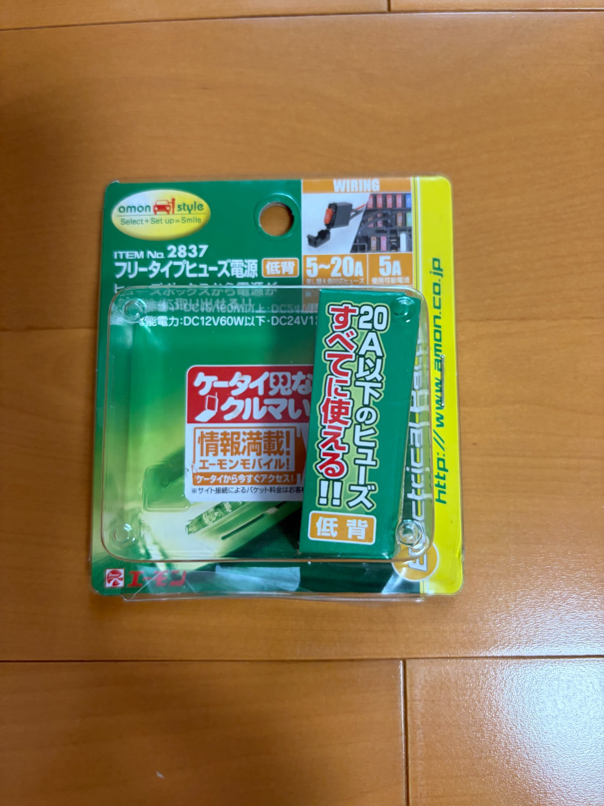
ヒューズボックスから電源を取り出すために使用。写真の2837は低背ヒューズ用です。車両のヒューズ形状・容量を必ず確認してください。
融着テープ・配線ベルト
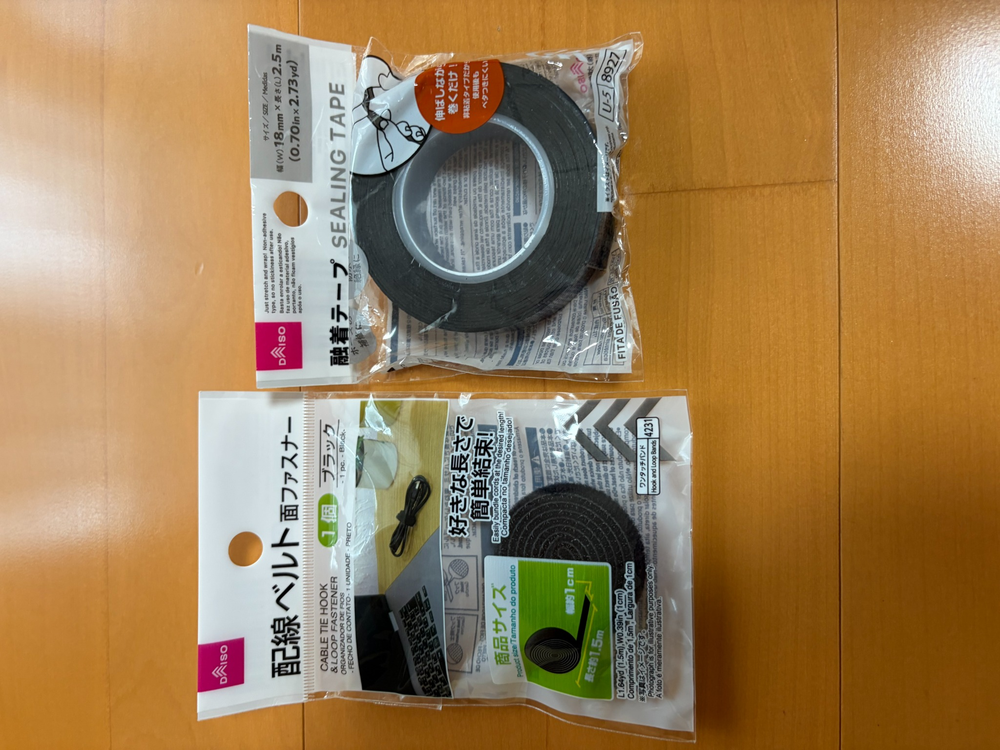
配線の保護やまとめに便利。写真は100円ショップの商品。ここは高価な専用品でなくても作業できます。
配線保護グロメット
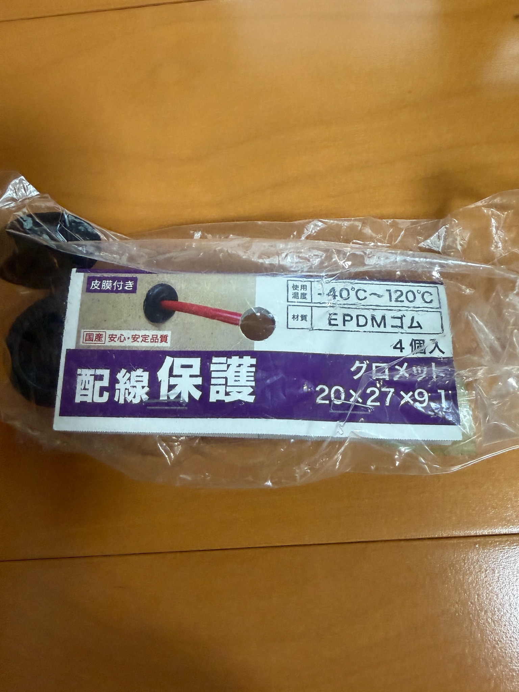
バックドアなどの穴を通す部分で配線を保護するために使用。ケーブルが金属の縁に直接触れないようにします。
エーモン 3426 配線止め金具ミニ
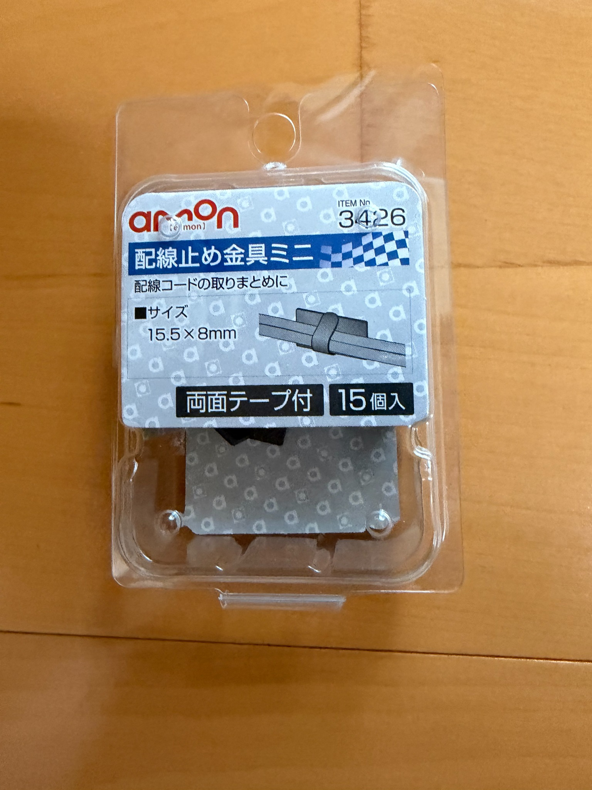
配線コードの取りまとめ・固定用。両面テープ付きで、配線をきれいに固定するのに便利です。
エーモン 3350 電源分岐ハーネス（ギボシ端子）
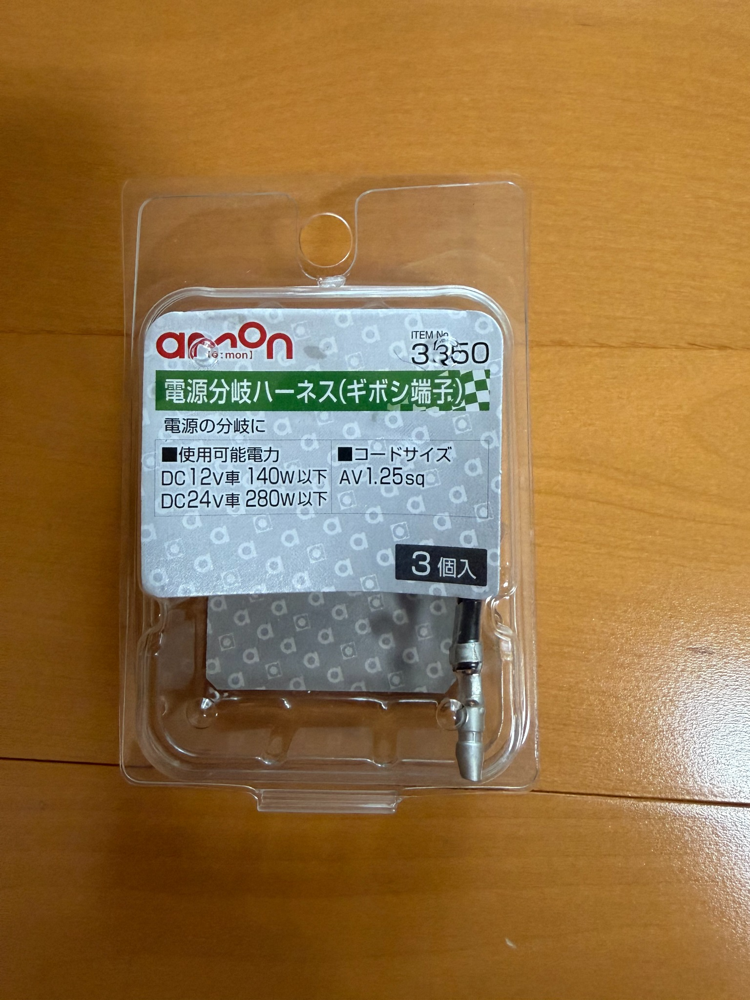
電源を分岐するときに使用。必要な電源構成に応じて準備します。
そのほか準備すると便利なもの
- 配線通し：最優先。長いケーブルを天井やバックドア内部へ通す作業で非常に役立ちます。
- 養生テープ：内装やボディの傷防止、仮固定に使用。100円ショップ品でも十分使えます。
- 融着テープ：配線の保護・絶縁・まとめに使用。100円ショップ品でも可。
- 配線ベルト：余ったケーブルをまとめる用途に便利。100円ショップ品でも可。
- 内張りはがし：Aピラーや内装を傷つけにくく外すために準備。
- 検電テスター：ACC電源などを確認してから接続するために使用。
ヒューズ電源について：写真のエーモン2837はメーカー公式では生産終了品です。手元にある場合は使用できますが、新しく購入する場合は車両のヒューズ形状と電装品の仕様に合う現行品を選んでください。また、ヒューズ電源には差し込む向きがあります。必ず電源側端子を確認して接続します。
2. ヒューズボックスから電源を取る
アースポイント
アースポイントは写真の位置にしました。グローブボックスは両側を内側に押すと下に落ちるので、そのまま手前に引っ張れば取り外せます。
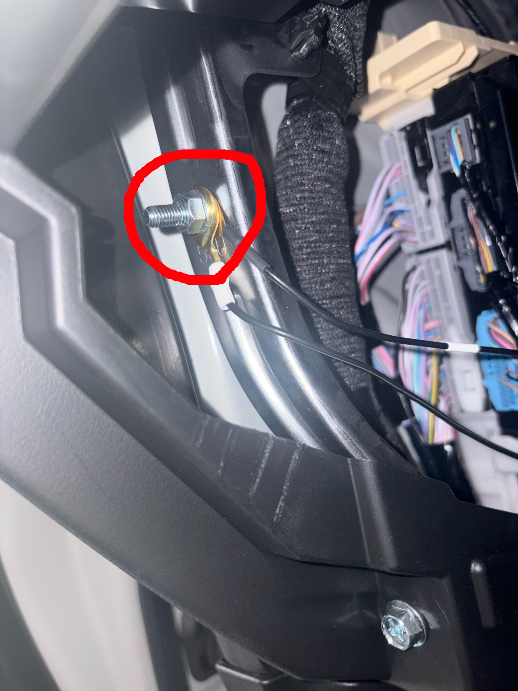
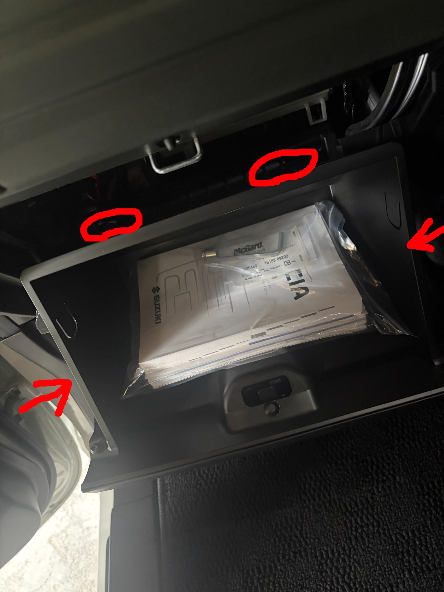
2
助手席側下部のヒューズボックスへアクセス
助手席側下部のヒューズボックスへアクセスします。
NV-8000Mの付属電源コードは、公式仕様上「+B/ACC電源直結コード」です。つまり常時電源（+B）とACC電源を正しく接続する必要があります。写真ではヒューズボックス周辺から電源を取り出し、ドラレコ用の配線をまとめています。
ヒューズ番号・容量を写真だけで決めないでください。 ACC電源と常時電源は車種ごとに異なります。テスターで「ACC ONのときだけ12Vになる回路」「常時12Vの回路」を確認し、純正回路の定格を守って接続してください。エアバッグ・ABS・ECUなど安全装置系のヒューズからは取らないでください。
とにかく手が入りにくく、今回の取付作業の中でも一番苦労する場所かもしれません。ヒューズの抜き差しや配線の取り回しには、小さいラジオペンチがあると何とか作業できます。通常サイズの工具では取り回しにくいため、先端が細く小型のものを用意しておくと作業しやすいです。
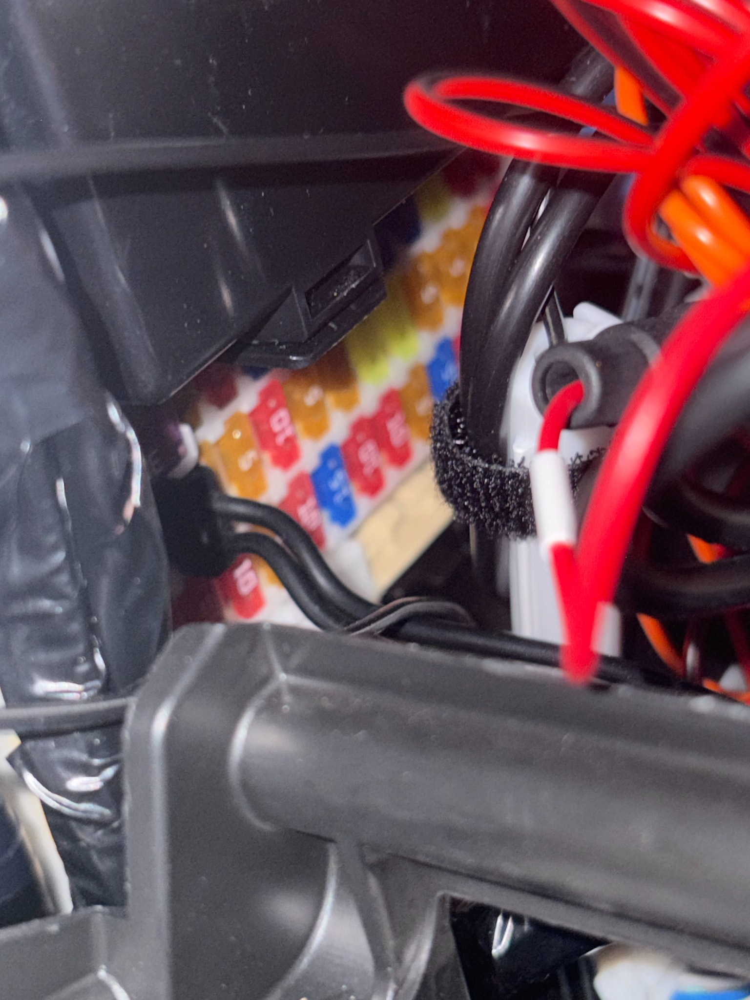
4. ミラー本体とフロント側を取り付ける
4
純正ミラーに本体を固定し、配線を天井側へまとめる
装着後は運転席からの視界、サンバイザーやセンサー類との干渉も確認します。
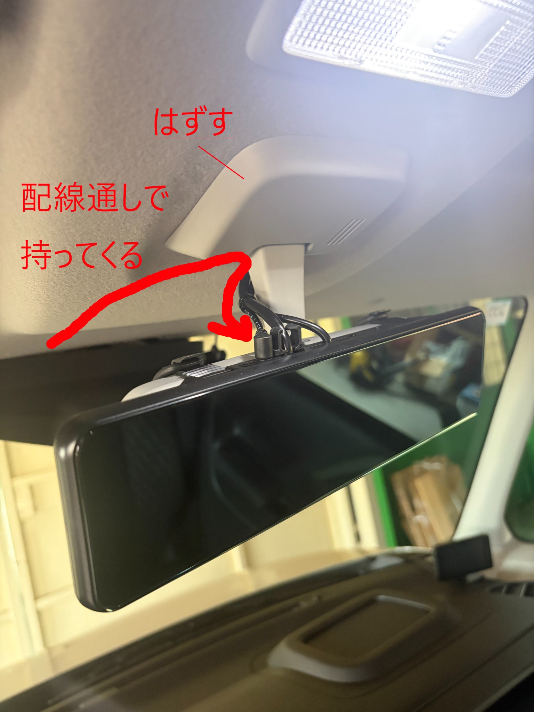
NV-8000Mは純正ルームミラーに固定して使うタイプです。付属の固定用ゴムバンドを確実に掛け、走行中に本体がずれないか確認します。ケーブルはフロントガラス上部の内張りへ沿わせ、視界を妨げないよう処理します。
5. リアカメラ線を天井沿いに後方へ通す
5
内張りとウェザーストリップ沿いに後ろへ
長いリアカメラケーブルは、ドア開口部の上側を使うと比較的きれいに隠せます。
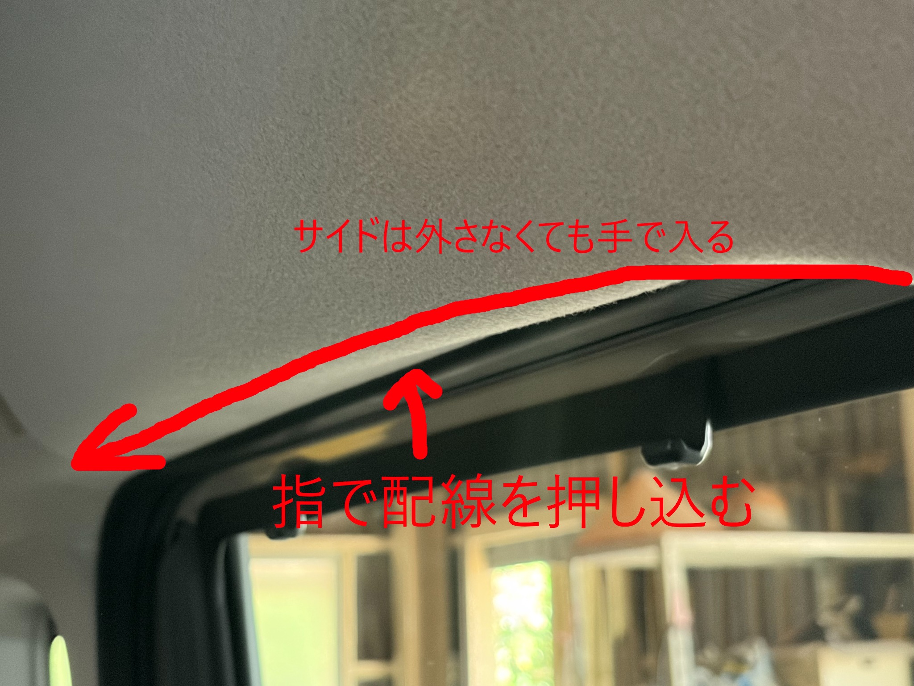
天井内張りの端を必要な範囲だけ浮かせ、ケーブルを少しずつ後方へ送ります。クリップを無理にこじると破損しやすいため、固定位置を確認して作業します。余った配線は可動部や金属エッジを避けて固定します。
6. バックドア側へケーブルを通す
6
純正のゴム蛇腹・グロメット部分を利用
車体側からバックドア側へ、既存ハーネスと同じ経路を通します。
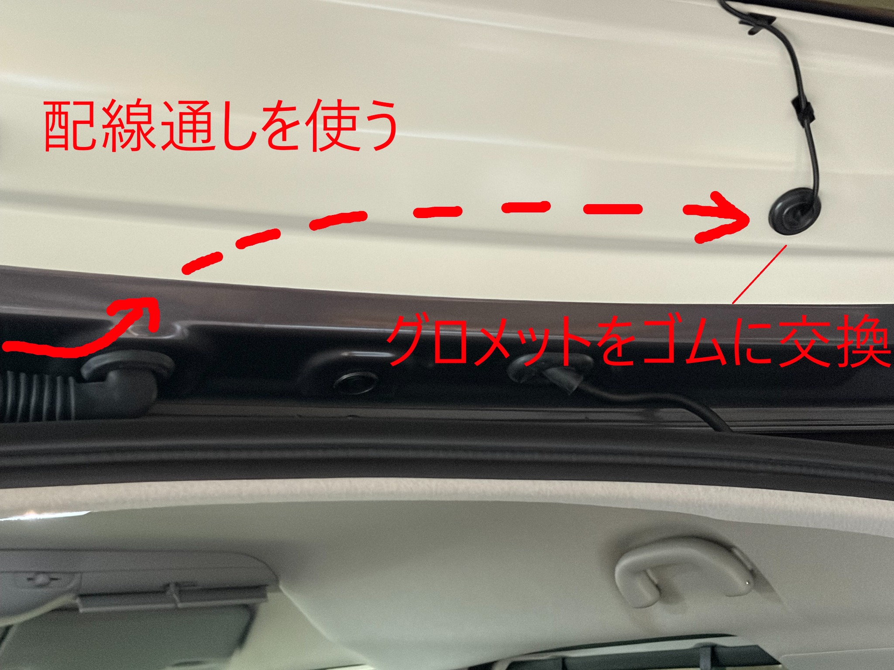
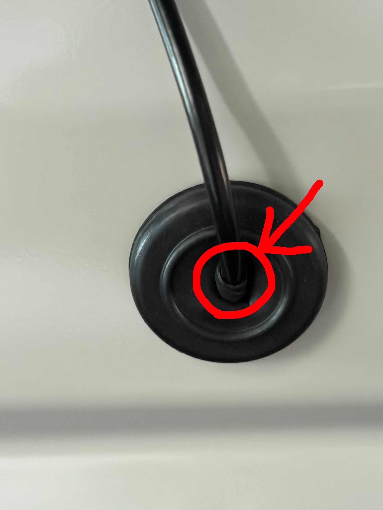
ここが一番の難所。配線通しを使うと作業が楽になります
バックドア側への通線は、この取付け作業の中でも一番の難所といっても過言ではありません。ここは配線通しを使うのがおすすめです。配線通しがあるだけで作業がかなり楽になり、無理にケーブルを押し込む必要も減らせます。
作業前に天井の固定ピンを外して、天井内張りに少し余裕を作っておくのもポイントです。配線通しを車体側からバックドア側へ送り、リアカメラのケーブルを引き込みます。
蛇腹の中には車両の純正配線が多く通っています。配線通しを無理に押し込んだり強く引っ張ったりせず、既存の配線を傷つけないよう慎重に作業してください。
リアカメラのケーブルを配線通しに固定するときは、養生テープなどで先端から段差ができないよう滑らかに巻いておくと、蛇腹の中で引っ掛かりにくくなります。
通線後、余ったケーブルはきれいに束ね、走行中に動いたり異音が出たりしないようにして天井内部へ収納します。ケーブルを強く折り曲げたり、可動部にはさんだりしないよう注意します。
ポイント：配線通し・養生テープを用意し、天井の固定ピンを先に外しておくと作業しやすくなります。
7. リアカメラを取り付ける
7
リアガラス上部に固定して角度を調整
できるだけ中央寄り・ワイパー払拭範囲内を意識すると、雨天時も映像を確保しやすくなります。
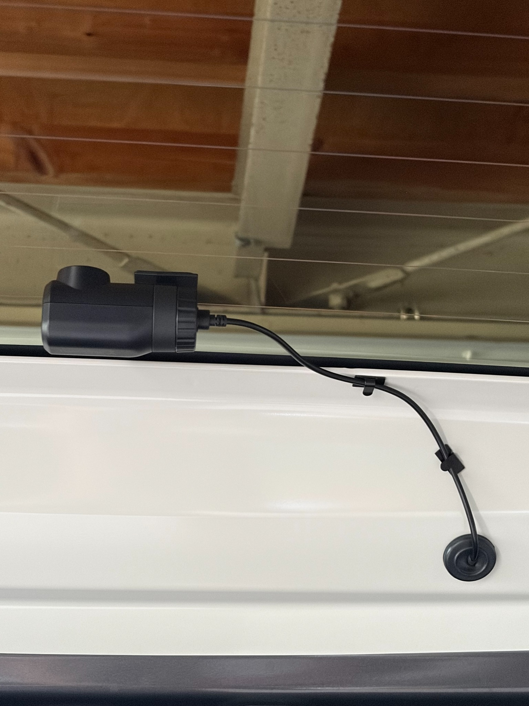
写真ではリアガラス上部にリアカメラを設置し、ケーブルを上側から引き込んでいます。貼り付け前にガラス面を脱脂し、熱線やワイパー、バックドア開閉時の干渉を確認します。最終固定の前に画面を見ながら水平と上下角度を合わせます。
8. 最後に動作確認
8
内装を完全に戻す前にテスト
- ACC ONで本体が起動し、前後カメラ映像が表示される。
- ACC OFF後の動作が設定どおりになっている。
- リア映像の上下・左右、表示範囲が自然か確認。
- バックドアを数回開閉し、ケーブルが引っ張られない。
- 内張り・ウェザーストリップ・グロメットを元どおりに戻す。
- 走行後にミラー本体のズレや異音がないか確認。
作業のポイント： 配線を全部隠してから電源を入れるのではなく、「電源接続後」「フロント設置後」「リア配線後」の3回程度に分けて動作確認すると、トラブル時に原因を追いやすくなります。
NV-8000Mを購入する
NV-8000Mは、Yahoo!ショッピング・楽天市場・Amazonから購入できます。
※ 当ページには広告が含まれる場合があります。価格・在庫・付属品・保証条件は販売店により異なるため、購入前に各販売ページをご確認ください。
DIYで取り付けるときの注意
電装品の取付けは、誤配線によるヒューズ切れ、バッテリー上がり、車両電装品の不具合、内装破損などにつながる場合があります。不安がある場合はカー用品店や整備工場など専門業者への依頼をおすすめします。本ページの写真は取付けルートの参考例であり、すべての車両で同じ方法を保証するものではありません。
重要：配線を通す前に動作確認
ヒューズ電源に接続したら、すぐに本格的な配線通しを始めるのではなく、まずドライブレコーダーの電源が入るか、フロント・リアカメラが正常に映るかなど、一通りの動作確認をしておくことをおすすめします。
動作確認をせずに内装の奥や天井、リアゲートまで配線してしまうと、万が一、不具合や接続ミスがあった場合に、せっかく通した配線を再び取り外すことになり大変です。「ヒューズ電源へ接続 → 動作確認 → 問題がなければ配線通し」の順で作業すると安心です。
サイドエアバッグ付近の配線について
サイドエアバッグ付近に配線を通す作業は、安全装置に関わるため十分な注意が必要です。配線がエアバッグの展開を妨げる位置にならないようにしてください。この部分の作業は自己責任で行い、少しでも不安がある場合や構造が分からない場合は、無理に作業せず、カー用品店や整備工場などの専門家に取付けを依頼してください。
サイドエアバッグ付近に配線を通す作業は、安全装置に関わるため十分な注意が必要です。配線がエアバッグの展開を妨げる位置にならないようにしてください。この部分の作業は自己責任で行い、少しでも不安がある場合や構造が分からない場合は、無理に作業せず、カー用品店や整備工場などの専門家に取付けを依頼してください。
そのほか：今回接続しなかった配線とミラーの反射について
外部入力ケーブル（橙色）と赤黒コードは、今回は取り付けませんでした。接続すると配線が多くなりますし、もともと車にバックモニターが付いているため、今回の使い方では接続しなくても十分使用できます。イルミ信号線についても、接続しなくても特に不便は感じませんでした。
それよりも気になったのは、ミラーへの映り込みです。反射して画面が見にくい場合は、まずミラー本体の角度を調整するとかなり見やすくなります。
反射防止フィルムも販売されていますが、普段はミラー画面を特に触ることがないため、今回は何も貼らずにそのまま使用しています。必要を感じてから反射防止フィルムを追加しても十分だと思います。